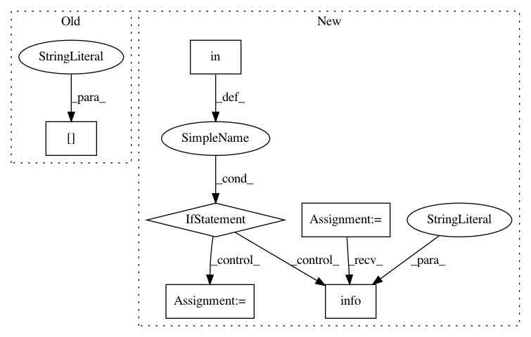

448e080c752a1b5f54c422401b41e824b0274a91,tensorflow/python/distribute/multi_process_lib.py,,_set_spawn_exe_path,#,89
Before Change
guess_path = sys.argv[0][:-3]
guess_path = guess_path.split(os.sep)
for path_reduction in range(-1, -len(guess_path), -1):
possible_path = os.sep.join(guess_path[:path_reduction] +
[guess_path[-1]])
if os.access(possible_path, os.X_OK):
path_to_use = possible_path
After Change
path = None
// If all we have is a python module path, we"ll need to make a guess for
// the actual executable path.
if "bazel-out" in sys.argv[0]:
// Guess the binary path under bazel. For target
// //tensorflow/python/distribute:input_lib_test_multiworker_gpu, the
// argv[0] is in the form of
// /.../org_tensorflow/tensorflow/python/distribute/input_lib_test.py
// and the binary is
// /.../org_tensorflow/tensorflow/python/distribute/input_lib_test_multiworker_gpu
org_tensorflow_path = sys.argv[0][:sys.argv[0].rfind("/tensorflow")]
if org_tensorflow_path.endswith("/org_tensorflow"):
binary = os.environ["TEST_TARGET"][2:].replace(":", "/", 1)
possible_path = os.path.join(org_tensorflow_path, binary)
logging.info("Guessed test binary path: %s", possible_path)
if os.access(possible_path, os.X_OK):
path = possible_path
if path is None:
logging.error(
"Cannot determine binary path. sys.argv[0]=%s os.environ=%s",
sys.argv[0], os.environ)
In pattern: SUPERPATTERN
Frequency: 4
Non-data size: 6
Instances
Project Name: tensorflow/tensorflow
Commit Name: 448e080c752a1b5f54c422401b41e824b0274a91
Time: 2020-11-17
Author: crccw@google.com
File Name: tensorflow/python/distribute/multi_process_lib.py
Class Name:
Method Name: _set_spawn_exe_path
Project Name: tensorflow/tensorflow
Commit Name: de336139770c6e9e035c0e402375efda48d75301
Time: 2020-11-18
Author: crccw@google.com
File Name: tensorflow/python/distribute/multi_process_lib.py
Class Name:
Method Name: _set_spawn_exe_path
Project Name: Qiskit/qiskit-aqua
Commit Name: 842b7b067d8855b3939c62de33181095c2cfca61
Time: 2019-01-02
Author: chenrich@us.ibm.com
File Name: qiskit_aqua/quantum_instance.py
Class Name: QuantumInstance
Method Name: set_config
Project Name: Qiskit/qiskit-aqua
Commit Name: 1e7f594c98e1c208a3d5db0fae06beb8be6eec40
Time: 2019-01-06
Author: chenrich@us.ibm.com
File Name: qiskit_aqua/quantum_instance.py
Class Name: QuantumInstance
Method Name: set_config